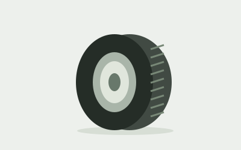
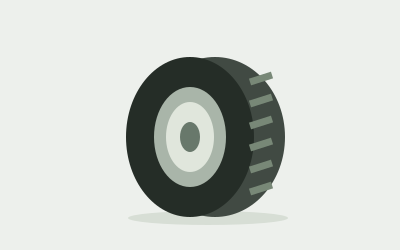
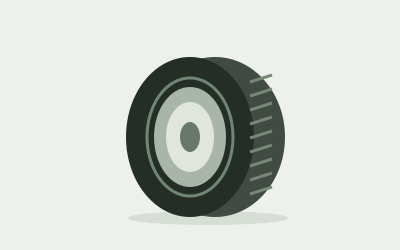
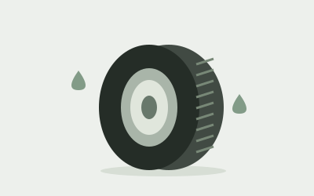

Pneu urbano
Serve para dirigir na cidade e em estradas asfaltadas. Oferece conforto e pouco ruído no dia a dia.

Serve para dirigir na cidade e em estradas asfaltadas. Oferece conforto e pouco ruído no dia a dia.

Serve para caminhos de terra e pisos irregulares. Seus blocos ajudam na tração em terrenos difíceis.

Serve para quem busca uma direção mais precisa no asfalto. Ajuda na aderência e na estabilidade em curvas.

Serve para melhorar a aderência em pistas molhadas. Seus sulcos ajudam a escoar a água e a reduzir o risco de aquaplanagem.